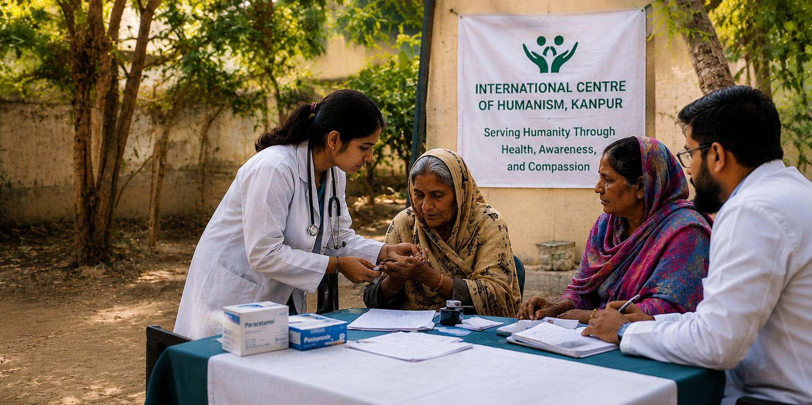

Serving Humanity Through Health, Awareness, and Compassion

The International Centre of Humanism, Kanpur (ICOHK) is a voluntary organization dedicated to the welfare of human beings through accessible healthcare, community awareness, and humanistic values.
ICOHK was founded by Dr. Anand Prakash Nigam, whose vision is rooted in the belief that health is a fundamental human right. ICOHK was envisioned not merely as an organization, but as a movement driven by compassion, social responsibility, and community participation.